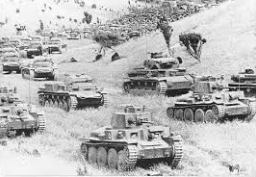

Résumé de la Blitzkrieg
La Blitzkrieg, ou "guerre éclair", a été une stratégie militaire utilisée par les forces allemandes pendant la Seconde Guerre mondiale pour mener des offensives rapides et dévastatrices.
- Contexte : La Blitzkrieg a été utilisée pour la première fois lors de l'invasion de la Pologne en 1939 et a été ensuite employée avec succès lors de l'invasion de la France en 1940.
- Stratégies :
- Attaques rapides et coordonnées utilisant des chars, l'infanterie motorisée et l'aviation pour percer les lignes ennemies.
- Utilisation de la surprise et de la vitesse pour désorienter et submerger les défenses adverses.
- Encerclement et destruction des forces ennemies pour éviter des guerres de tranchées prolongées.
- Déroulement :
- Septembre 1939 : Invasion de la Pologne, marquant le début de la Seconde Guerre mondiale.
- Mai-Juin 1940 : Invasion de la France, aboutissant à une défaite rapide et à l'occupation allemande.
- Campagnes en Belgique, aux Pays-Bas et dans d'autres pays d'Europe occidentale, utilisant la même stratégie de guerre éclair.
- Importance : La Blitzkrieg a permis à l'Allemagne de remporter des victoires rapides et décisives en début de guerre, établissant la domination nazie en Europe occidentale pendant plusieurs années.
